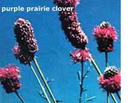
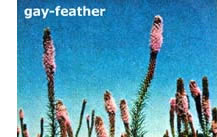
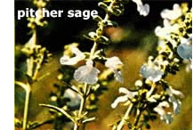

"It is a bad soil where no flowers will grow," said Thomas Fuller in 1732. Working on that premise, the U.S. Department of Agriculture has "domesticated" three grow-anywhere prairie wildflowers (see photos above) and begun selling certified seed to commercial growers (see addresses below). The good news for gardeners is that beginning this fall, these growers will offer the wildflower seeds to the general public for the first time.
The three wildflowers in questionmysteriously named Kaneb, Eureka, and Nekan--were selected by the USDA after ten years of testing, primarily for the plants' ability to control soil erosion and (at the same time) beautify pastures, rangelands, and roadsides. Each one is hardy, easy to grow, and-in general-perfectly suited to gardening.
The first plant-Kaneb, a purple prairie clover-looks like a cross between a thistle and a cattail. Like its stylish cou. sin the peanut, Kaneb is a legume: it takes its nitrogen from the air and thus grows well In nitrogen-poor soils. Animals can graze Kaneb without harm, and the plant is said to withstand extremes of temperature and moisture well.
If you like lavender, you'll love Eureka. This wildflower-a lovely lavender gayfeather that requires no maintenance and can grow up to five feet tall -was developed to beautify highways, but it can easily be adapted to home gardens, driveways, fences, etc.
Nakan--a pitcher sage that the USDA has recently domesticated-is actually a mint with woolly foliage and large, white flowers. It's said to be capable of strengthening prairie grazing land, serving as forage for large and small stock, and acting as a breath freshener for cows.
Wildflowers (the above three especially) are easy to grow. Just remember:
[1] No cultivating. (If weeding is necessary, do it by hand.)
[2] No herbicides.
[3] No chemical fertilizers. (Compost works much better.)
[4] Always cover the bare earth around wildflowers with mulch . . . at least until the plants are well established.
For information on how to order the above wildflower varieties, contact Stock Seed Farms, Inc., RR 1, Box 112, Murdock, Neb. 68407, or Sharp Brothers Seed Co., Box 140, Healy, Kan. 76850 . . . and enclose a little something to cover the cost of a reply.
|
 |
 |
 |